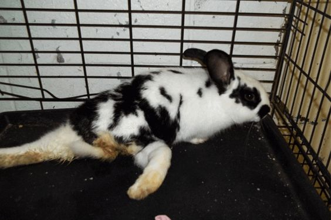
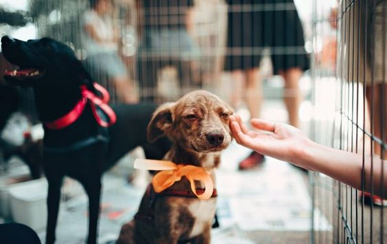

Ofrecer un trato digno a nuestros pequeños desde su llegada a nuestra familia hasta el término de sus días, en un ambiente de amor, respeto y tranquilidad al ser un miembro más de nuestra familia.
Crear una cultura de respeto animal en nuestro país, transformando la cultura de abuso, maltrato y abandono en una cultura de CARIÑO, CUIDADO Y RESPETO hacia todos los animales.
RESPETO: Trato digno y amoroso a todos los pequeños que llegan a nuestras instalaciones
HONESTIDAD: Actuar de acuerdo a las políticas, principios y procedimientos que nos rigen
INTEGRIDAD: Luchando por una segunda oportunidad de vida en un ambiente lleno de amor, atención y cuidados, promoviendo la adopción con toda la responsabilidad física, emocional y económica que representa
RESPONSABILIDAD AMBIENTAL: Promover la esterilización de perros y gatos evitando al sobrepoblación y disminuyendo la contaminación ocasionada por materia fecal y cadáveres


